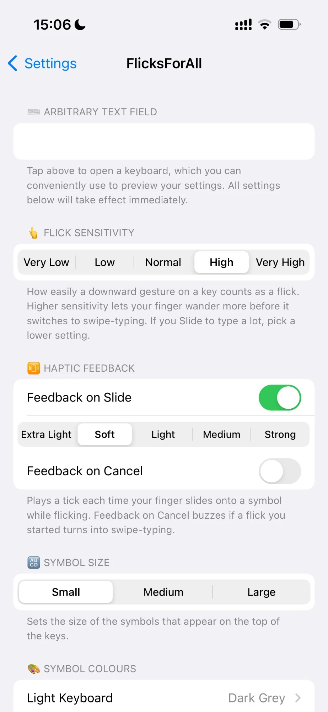
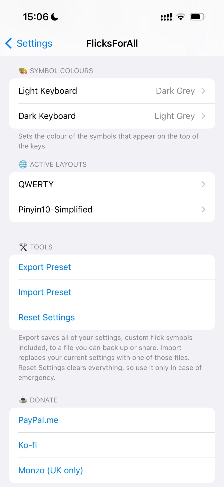
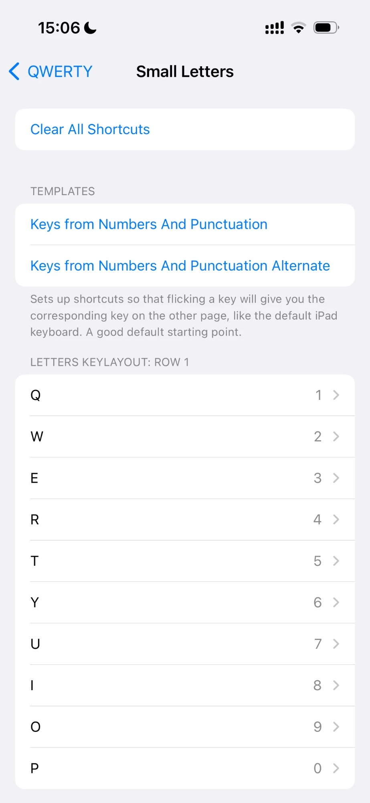

Developer
Ninji
Ninji




iPad-like key flicks on iPhone
New “Shift Delete” option in “Other Settings” (off by default): separate switches for Shift Hold + Delete and Shift Lock (Caps Lock) + Delete, which make Delete remove the word before the caret.
New Flick Sensitivity presets (5 levels), haptic strength options and optional Feedback on Cancel, Symbol Size presets, export/import presets, reorganised settings with clearer descriptions, new settings icon
Better logic distinguishes between flick and slide to type; fix preview glitch